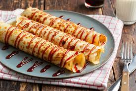

Pannenkoeken

Ingrediënten
Bereiding
- Doe de melk en de pannenkoekenmix in een kom
- Mix door elkaar
- Voeg een voor een de eieren toe en meng door het beslag
- Verhit boter of olie in een pannenkoekenpan
- Schep wat beslag in de pan, niet te dik
- Draai de pannenkoek om wanneer deze droog is aan de bovenkant
- Bak verder tot de pannenkoek mooi bruin is
Terug naar de hoofdpagina